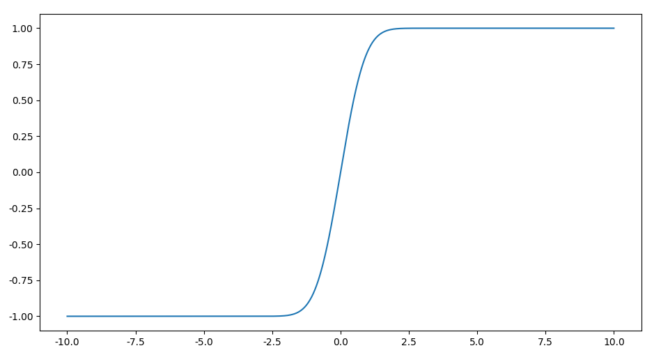
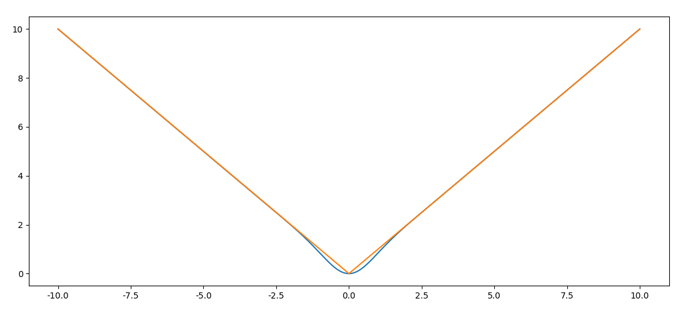
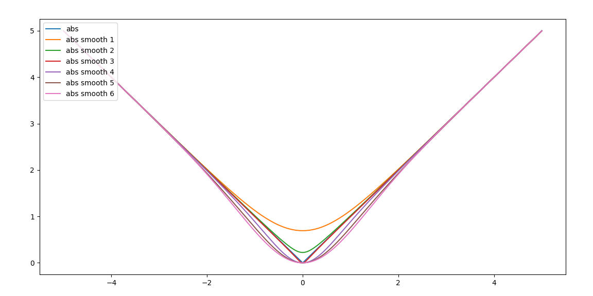

函数光滑近似（3）：abs函数
求模函数在深度学习中也是很常见，例如文本匹配中，求两个词向量的模作为特征。本文讨论abs的光滑近似。
max变换出发
注意到$f(x) = |x|$可以用max函数表示，而max函数可以表示为logsumexp形式，于是有参数的形式
取$\alpha=1$，有特例，
对于二元形式的$\max(x,y) $，有
取$y = -x$，于是，
其实就是函数光滑近似（1）：max函数#构造max的光滑近似中的结果。
几何角度出发
abs 可以从几何的角度出发，看做 $(x,0)$ 到原点的距离，通过偏移 $(x,\mu)$，有
可以写成，
其中 $\mu \gt 0$ ，这两种写法没有质的区别。我们可以让$\mu$随着远离远点儿减小，例如，
但是这种形式是不具有对称性，为此可以改为偏移指数衰减，
这里涉及到$e^{x}+e^{-x}$是出于对称性考虑。
偏移平方指数衰减，
按照这种思路，还可以构造更多的光滑逼近。不过需要注意，上述涉及到$f(x) = e^x$的构造并不对称，需要改成$f(x) = e^x + e^{-x}$形式。而且这些构造计算梯度并不优雅。
从符号函数开刀
使用符号函数表示绝对值函数，
其中，
因此，当$x \ne 0$时，有
只要逼近符号函数 $\operatorname{sign}(x)$ 就能解决绝对值函数$f(x) = |x|$的光滑逼近问题，也就是找“softsign”函数。逼近符号函数有两种方法：
- 数值逼近
- 随机逼近
这两种思路本质上是寻找类似logistics函数来逼近符号函数 $\operatorname{sign}(x)$ ，我们先说数值逼近。
根据$\operatorname{sign}(x) = \frac{x}{|x|}$最容易构造满足$x=0$的情况为，
这里$\varepsilon \rightarrow 0$。因此有，
类似的思路还有很多。注意到$|x| = \max(x, -x)$函数可以表示为logsumexp形式，因此有，
我们注意到$\sigma(x)$的形状和符合函数很像（纯几何直觉），只不过其区间在$(0, 1)$，通过变换，使其区间落到$(-1, 1)$，即
这里引入参数$\mu$控制$x$的饱和区间。于是有，
类似的思路还有，
其中$\alpha \gt 0$。
Heaviside step函数也能构造，
这里$k \rightarrow \infty$，$k$取值越大逼近效果越好。
此外，考虑到$\operatorname{softsign}(x) = \frac{x}{1+ |x|}$，有
于是有连分数，
可以改写成迭代形式，
这个形式还可以进一步推广，
于是有连分数，
好啦，感觉思路越来越怪异了。我们跳出来吧。
符号函数概率化逼近
还可以从概率的角度构造这个偏移量，假设这个偏移服从正态分布
是一个像logistics函数图像一样的函数，易证$\operatorname{erf}(\frac{x}{\sqrt{2}}) \in (-1, 1)$，函数图像如下，

值得注意，标准正态分布的累积分布函数可以用$\operatorname{erf}(x)$表示，
于是有
可视化对比abs函数的差异，

可以看到逼近效果很好，那么接下来的思路就是使用简单的函数近似$\operatorname{erf}(\frac{x}{\sqrt{2}})$。那么怎么推呢，这里我们直接借鉴论文Gaussian Error Linear Units (GELUs)中的结论，注意到论文中有结论，
于是有，
因此有，
以上推导用到正态分布的累积分布函数$\Phi_{\sigma}(x) $与误差函数$\operatorname{erf}(x)$的关系，
逼近误差
以上分析了很多关于abs函数的光滑化方法，那么如何度量这些光滑后的逼近函数对abs的精确度呢？可以考虑积分形式的全局误差。这里$f(x) = |x|$，$g(x)$是前者的光滑版本，那么逼近误差有，
平方误差可以改为绝对值误差，
如果光滑函数带有参数，即$g(x,\theta)$，那么有
但是求积分本身是很困难的事情，尤其是上述涉及到复杂的函数。因此，绕过求积分，转化成求最值的优化方法更好，
该优化的意思在$|f(x)-g(x,\theta)|$关于$x$最大的情况下，寻找让其最小的$\theta$。
实现（补充）
以上关于abs函数光滑逼近的实现对比，

这是后期补充的，具体实现见：https://github.com/allenwind/smooth-approximation-function
可能会根据情况持续更新~
总结
以上我们提出了很多abs函数光滑化方法，包括几何角度、对符号函数逼近以及逼近$\operatorname{erf}(\frac{x}{\sqrt{2}})$。
参考
[1] https://en.wikipedia.org/wiki/Sign_function
[2] https://en.wikipedia.org/wiki/Sigmoid_function
[3] https://en.wikipedia.org/wiki/Heaviside_step_function
[4] https://en.wikipedia.org/wiki/Error_function
[5] https://arxiv.org/pdf/1606.08415.pdf
转载请包括本文地址：https://allenwind.github.io/blog/9959
更多文章请参考：https://allenwind.github.io/blog/archives/